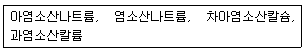
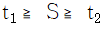
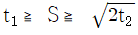
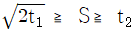
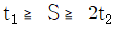
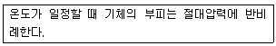
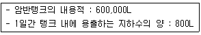

위험물기능장 (2016-04-02 기출문제)
1과목: 임의구분
1. 위험물탱크의 내용적이 10,000L이고 공간용적이 내용적의 10%일 때 탱크의 용량은?
- 19,000L
- 11,000L
- 9,000L
- 1,000L
(정답률: 86%)

2. 하나의 옥내저장소에 염소산나트륨 300kg, 요오드산칼륨 150kg, 과망간산칼륨 500kg을 저장하고 있다. 각 물질의 지정수량 배수의 합은 얼마인가?
- 5배
- 6배
- 7배
- 8배
(정답률: 83%)
3. 위험물안전관리법령상 위험등급이 나머지 셋과 다른 하나는?
- 아염소산나트륨
- 알킬알루미늄
- 아세톤
- 황린
(정답률: 81%)
4. 위험물안전관리법령상 주유취급소 작업장(자동차 등을 점검ㆍ정비)에서 사용하는 폐유ㆍ윤활유 등의 위험물을 저장하는 탱크의 용량(L)은 얼마이하이어야 하는가?
- 2,000
- 10,000
- 50,000
- 60,000
(정답률: 82%)
5. 위험물안전관리법령상 제4류 위험물의 지정수량으로서 옳지 않은 것은?
- 피리딘 : 400L
- 아세톤 : 400L
- 니트로벤젠 : 1000L
- 아세트산 : 2000L
(정답률: 73%)
6. 위험물안전관리법령상 운반용기 내용적의 95% 이하의 수납율로 수납하여야 하는 위험물은?
- 과산화벤조일
- 질산메틸
- 니트로글리세린
- 메틸에틸케톤퍼옥사이드
(정답률: 78%)
7. 위험물안전관리법령상 염소화규소화합물은 제 몇 류 위험물에 해당되는가?
- 제1류
- 제2류
- 제3류
- 제4류
(정답률: 78%)
8. 위험물안전관리법령상에서 정한 제2류 위험물의 저장ㆍ취급 기준에 해당되지 않는 것은?
- 산화제와의 접촉ㆍ혼합을 피한다.
- 철분ㆍ금속분ㆍ마그네슘 및 이를 함유한 것에 있어서는 물이나 산과의 접촉을 피한다.
- 인화성 고체에 있어서는 함부로 증기를 발생시키지 아니하여야 한다.
- 고온체와의 접근ㆍ과열 또는 공기와의 접촉을 피한다.
(정답률: 63%)
9. 다음 금속원소 중 이온화에너지가 가장 큰 원소는?
- 리튬
- 나트륨
- 칼륨
- 루비듐
(정답률: 89%)
10. 위험물안전관리법령상 제2류 위험물 제조소의 외벽 또는 이에 상응하는 공작물의 외측으로부터 문화재와의 안전거리 기준에 관한 설명으로 옳은 것은?
- 문화재보호법의 규정에 의한 유형문화재와 무형문화재 중 지정문화재까지 50m 이상 이격할 것
- 문화재보호법의 규정에 의한 유형문화재와 기념물 중 지정문화재까지 50m 이상 이격할 것
- 문화재보호법의 규정에 의한 유형문화재와 기념물 중 지정문화재까지 30m 이상 이격할 것
- 문화재보호법의 규정에 의한 유형문화재와 무형문화재 중 지정문화재까지 30m 이상 이격할 것
(정답률: 82%)
11. 알코올류의 탄소수가 증가함에 따른 일반적인 특징으로 옳은 것은?
- 인화점이 낮아진다.
- 연소범위가 넓어진다.
- 증기 비중이 증가한다.
- 비중이 증가한다.
(정답률: 75%)
12. 위험물저장탱크에 설치하는 통기관 선단의 인화방지망은 어떤 소화효과를 이용한 것인가?
- 질식소화
- 부촉매소화
- 냉각소화
- 제거소화
(정답률: 76%)
13. 보기의 물질 중 제1류 위험물에 해당하는 것은 모두 몇 개인가?

- 4개
- 3개
- 2개
- 1개
(정답률: 90%)
14. 위험물안전관리법령상 한 변의 길이는 10m, 다른 한 변의 길이는 50m 인 옥내저장소에 자동화재탐지설비를 설치하는 경우 경계구역은 원칙적으로 최소한 몇 개로 하여야 하는가? (단, 차동식스포트형감지기를 설치한다.)
- 1
- 2
- 3
- 4
(정답률: 86%)
15. 특정옥외저장탱크 구조기준 중 필렛용접의 사이즈(S, mm)를 구하는 식으로 옳은 것은? (단, t1 : 얇은 쪽의 강판의 두께[mm], t2 : 두꺼운 쪽의 강판의 두께[mm]이며, S≧4.5이다.)




(정답률: 89%)
16. 이황화탄소의 성질 또는 취급 방법에 대한 설명 중 틀린 것은?
- 물보다 가볍다.
- 증기가 공기보다 무겁다.
- 물을 채운 수조에 저장한다.
- 연소 시 유독한 가스가 발생한다.
(정답률: 72%)
17. 제3류 위험물의 화재 시 소화에 대한 설명으로 틀린 것은?
- 인화칼슘은 물과 반응하여 포스핀가스가 발생하므로 마른모래로 소화한다.
- 세슘은 물과 반응하여 수소를 발생하므로 물에 의한 냉각소화를 피해야 한다.
- 디에틸아연은 물과 반응하므로 주수소화를 피해야 한다.
- 트리에틸알루미늄은 물과 반응하여 산소를 발생하므로 주수소화는 좋지 않다.
(정답률: 79%)
18. 인화성 액체위험물을 저장하는 옥외탱크저장소의 주위에 설치하는 방유제에 관한 내용으로 틀린 것은?
- 방유제는 높이 0.5m 이상 3m 이하, 두께 0.2m 이상, 지하매설깊이 1m 이상으로 한다.
- 2기 이상의 탱크가 있는 경우 방유제의 용량은 그 탱크 중 용량이 최대인 것의 용량의 110% 이상으로 한다.
- 용량이 1000만리터 이상인 옥외저장탱크의 주위에 설치하는 방유제에는 탱크마다 간막이 둑을 흙 또는 철근콘크리트로 설치한다.
- 간막이 둑을 설치하는 경우 간막이 둑의 용량은 간막이 둑안에 설치된 탱크 용량의 110% 이상이어야 한다.
(정답률: 84%)
19. 각 유별 위험물의 화재예방대책이나 소화방법에 관한 설명으로 틀린 것은?
- 제1류-염소산나트륨은 철제용기에 넣은 후 나무상자에 보관한다.
- 제2류-적린은 다량의 물로 냉각소화한다.
- 제3류-강산화제와의 접촉을 피하고, 건조사, 팽창질석, 팽창진주암 등을 사용하여 질식소화를 시도한다.
- 제5류-분말, 할론, 포 등에 의한 질식소화는 효과가 없으며, 다량의 주수소화가 효과적이다.
(정답률: 83%)
20. 다음에서 설명하고 있는 법칙은?

- 일정성분비의 법칙
- 보일의 법칙
- 샤를의 법칙
- 보일-샤를의 법칙
(정답률: 88%)
2과목: 임의구분
21. 제6류 위험물에 대한 설명으로 옳은 것은?
- 과염소산은 무취, 청색의 기름상 액체이다.
- 알루미늄, 니켈 등은 진한 질산에 녹지 않는다.
- 과산화수소는 크산토프로테인 반응과 관계가 있다.
- 오불화브롬(오플루오린화브로민)의 화학식은 C2F5Br이다.
(정답률: 59%)
22. 위험물 운반용기의 외부에 표시하는 사항이 아닌 것은?
- 위험등급
- 위험물의 제조일자
- 위험물의 품명
- 주의사항
(정답률: 92%)
23. 다음 중 지하탱크저장소의 수압시험 기준으로 옳은 것은?
- 압력의 탱크는 상용압력의 30kPa의 압력으로 10분간 실시하여 새거나 변형이 없을 것
- 압력 탱크는 최대 상용압력의 1.5배의 압력으로 10분간 실시하여 새거나 변형이 없을 것
- 압력의 탱크는 사용압력의 30kPa의 압력으로 20분간 실시하여 새거나 변형이 없을 것
- 압력 탱크는 최대 상용압력의 1.1배의 압력으로 10분간 실시하여 새거나 변형이 없을 것
(정답률: 88%)
24. 제조소 내 액체위험물을 취급하는 옥외설비의 바닥둘레에 설치하여야 하는 턱의 높이는 얼마이상이어야 하는가?
- 0.1m 이상
- 0.15m 이상
- 0.2m 이상
- 0.25m 이상
(정답률: 75%)
25. 제조소등에서의 위험물 저장의 기준에 관한 설명 중 틀린 것은?
- 제3류 위험물 중 황린과 금수성물질은 동일한 저장소에서 저장하여도 된다.
- 옥내저장소에서 재해가 현저하게 증대할 우려가 있는 위험물을 다량 저장하는 경우에는 지정수량의 10배 이하마다 구분하여 상호간 0.3m 이상의 간격을 두어 저장하여야 한다.
- 옥내저장소에서는 용기에 수납하여 저장하는 위험물의 온도가 55℃를 넘지 아니하도록 필요한 조치를 강구하여야 한다.
- 컨테이너식 이동탱크저장소외의 이동탱크저장소에 있어서는 위험물을 저장한 상태로 이동저장탱크를 옮겨 싣지 아니하여야 한다.
(정답률: 75%)
26. 다음은 옥내저장소의 저장창고와 옥내탱크저장소의 탱크전용실에 관한 설명이다. 위험물안전관리법령 상의 내용과 상이한 것은?
- 제4류 위험물 제1석유류를 저장하는 옥내저장소에 있어서 하나의 저장창고의 바닥면적은 1,000m2 이하로 설치하여야 한다.
- 제4류 위험물 제1석유류를 저장하는 옥내탱크저장소의 탱크전용실은 건축물의 1층 또는 지하층에 설치하여야 한다.
- 다층건물 옥내저장소의 저장창고에서 연소의 우려가 있는 외벽은 출입구 외의 개구부를 갖지 아니하는 벽으로 하여야 한다.
- 제3류 위험물인 황린을 단독으로 저장하는 옥내탱크저장소의 탱크전용실은 지하층에 설치할 수 있다.
(정답률: 54%)
27. 벤조일퍼옥사이드(과산화벤조일)에 대한 설명으로 틀린 것은?
- 백색 또는 무색 결정성 분말이다.
- 불활성 용매 등의 희석제를 첨가하면 폭발성이 줄어든다.
- 진한 황산, 진한 질산, 금속분 등과 혼합하면 분해를 일으켜 폭발한다.
- 알코올에는 녹지 않고, 물에 잘 용해된다.
(정답률: 78%)
28. 위험물안전관리법령상 IF5의 지정수량은?
- 20kg
- 50kg
- 200kg
- 300kg
(정답률: 81%)
29. 유량을 측정하는 계측기구가 아닌 것은?
- 오리피스미터
- 피에조미터
- 로터미터
- 벤츄리미터
(정답률: 72%)
30. 위험물 암반탱크가 다음과 같은 조건일 때 탱크의 용량은 몇 L 인가?

- 594,400
- 594,000
- 593,600
- 592,000
(정답률: 79%)
31. 질산칼륨에 대한 설명으로 틀린 것은?
- 황화린, 질소와 혼합하면 흑색화약이 된다.
- 에테르에 잘 녹지 않는다.
- 물에 녹으므로 저장 시 수분과의 접촉에 주의한다.
- 400℃로 가열하면 분해하여 산소를 방출한다.
(정답률: 77%)
32. 다음 중 옥내저장소에 위험물을 저장하는 제한높이가 가장 높은 경우는?
- 기계에 의하여 하역하는 구조로 된 용기만을 겹쳐 쌓는 경우
- 증유를 수납하는 용기만을 겹쳐 쌓는 경우
- 아마인유를 수납하는 용기만을 겹쳐 쌓는 경우
- 적린을 수납하는 용기만을 겹쳐 쌓는 경우
(정답률: 91%)
33. 방폭구조 결정을 위한 폭발위험장소를 옳게 분류한 것은?
- 0종 장소, 1종 장소
- 0종 장소, 1종 장소, 2종 장소
- 1종 장소, 2종 장소, 3종 장소
- 0종 장소, 1종 장소, 2종 장소, 3종 장소
(정답률: 81%)
34. 위험물안전관리법령상 알칼리금속 과산화물에 적응성이 있는 소화설비는?
- 할로겐화합물 소화설비
- 탄산수소염류 분말소화설비
- 물분무소화설비
- 스프링클러설비
(정답률: 86%)
35. 위험물안전관리법령상 위험물제조소등에 자동화재탐지설비를 설치할 때 설치기준으로 틀린 것은?
- 하나의 경계구역의 면적은 600m2 이하로 할 것
- 광전식 분리형 감지기를 설치한 경우 경계구역의 한 변의 길이는 50m 이하로 할 것
- 감지기는 지붕 또는 벽의 옥내에 면하는 부분에 유효하게 화재의 발생을 감지할 수 있도록 설치할 것
- 비상전원을 설치할 것
(정답률: 88%)
36. 분진폭발에 대한 설명으로 틀린 것은?
- 밀폐공간 내 분진운이 부유할 때 폭발위험성이 있다.
- 충격, 마찰도 착화에너지가 될 수 있다.
- 2차, 3차 폭발의 발생우려가 없으므로 1차 폭발 소화에 주력하여야 한다.
- 산소의 농도가 증가하면 위험성이 증가할 수 있다.
(정답률: 93%)
37. 위험물안전관리법령상 적린, 황화린에 적응성이 없는 소화설비는?
- 옥외소화전설비
- 포소화설비
- 불활성가스소화설비
- 인산염류등의 분말소화설비
(정답률: 57%)
38. 소형수동식소화기의 설치기준에 따라 방호대상물의 각 부분으로부터 하나의 소형수동식소화기까지의 보행거리가 20m 이하가 되도록 설치하여야 하는 제조소등에 해당하는 것은? (단, 옥내소화전설비, 옥외소화전설비, 스프링클러설비, 물분무등소화설비 또는 대형수동식소화기와 함께 설치하지 않은 경우이다.)
- 지하탱크저장소
- 주유취급소
- 판매취급소
- 옥내저장소
(정답률: 67%)
39. 다음은 옥내저장소에 유별을 달리하는 위험물을 함께 저장ㆍ취급할 수 있는 경우를 나열한 것이다. 위험물안전관리법령상의 내용과 다른 것은? (단, 유별로 정리하고 서로 1rn 이상 간격을 두는 경우이다.)
- 과산화나트륨-유기과산화물
- 염소산나트륨-황린
- 디에틸에테르-고형알코올
- 무수크롬산-질산
(정답률: 56%)
40. 다음 중 소화약제의 종류에 관한 설명으로 틀린 것은?
- 제2종 분말소화약제는 B급, C급 화재에 적응성이 있다.
- 제3종 분말소화약제는 A급, B급, C급 화재에 적응성이 있다.
- 이산화탄소 소화약제의 주된 소화효과는 질식효과이며 B급, C급 화재에 주로 사용한다.
- 합성계면활성제 포 소화약제는 고팽창포로 사용하는 경우 사정거리가 길어 고압가스, 액화가스, 석유탱크등의 대규모 화재에 사용한다.
(정답률: 79%)
3과목: 임의구분
41. 지정수량이 나머지 셋과 다른 위험물은?
- 브롬산칼륨
- 질산나트륨
- 과염소산칼륨
- 요오드산칼륨
(정답률: 76%)
42. 분무도장작업등을 하기 위한 일반취급소를 안전거리 및 보유공지에 관한 규정을 적용하지 않고 건축물 내의 구획실 단위로 설치하는데 필요한 요건으로 틀린 것은?
- 취급하는 위험물의 수량은 지정수량의 30배 미만일 것
- 건축물 중 일반취급소의 용도로 사용하는 부분은 벽ㆍ기둥ㆍ바닥ㆍ보 및 지붕(상층이 있는 경우에는 상층의 바닥)을 내화구조로 할 것
- 도장, 인쇄 또는 도포를 위하여 제2류 또는 제4류 위험물(특수인화물은 제외)을 취급하는 것일 것
- 건축물 중 일반취급소의 용도로 사용하는 부분의 출입구에는 갑종방화문 또는 을종방화문을 설치할 것
(정답률: 66%)
43. 황화린에 대한 설명 중 틀린 것은?
- 삼황화린은 과산화물, 금속분 등과 접촉하면 발화의 위험성이 높아진다.
- 삼황하린이 연소하면 SO2와 P2O5가 발생한다.
- 오황화린이 물과 반응하면 황화수소가 발생한다.
- 오황하린은 알칼리와 반응하여 이산화황과 인산이 된다.
(정답률: 66%)
44. 위험물안전관리법령상 “고인화점 위험물”이란?
- 인화점이 섭씨 100도 이상인 제4류 위험물
- 인화점이 섭씨 130도 이상인 제4류 위험물
- 인화점이 섭씨 100도 이상인 제4류 위험물 또는 제3류 위험물
- 인화점이 섭씨 100도 이상인 위험물
(정답률: 81%)
45. 칼륨을 저장하는 위험물옥내저장소에 화재예방을 위한 조치가 아닌 것은?
- 작은 용기에 소분하여 저장한다.
- 석유 등의 보호액 속에 저장한다.
- 화재 시에 다량의 물로 소화하도록 소화수조를 설치한다.
- 용기의 파손이나 부식에 주의하고 안전점검을 철저히 한다.
(정답률: 87%)
46. C6H6와 C6H5CH3의 공통적인 특징을 설명한 것으로 틀린 것은?
- 무색의 투명한 액체로서 냄새가 있다.
- 물에는 잘 녹지 않으나 에테르에는 잘 녹는다.
- 증기는 마취성과 독성이 있다.
- 겨울에 대기 중의 찬 곳에서 고체가 된다.
(정답률: 82%)
47. 알코올류의 성상, 위험성, 저장 및 취급에 대한 설명으로 틀린 것은?
- 농도가 높아질수록 인화점이 낮아져 위험성이 증대된다.
- 알칼리금속과 반응하면 인화성이 강한 수소를 발생한다.
- 위험물안전관리법령상 1분자를 구성하는 탄소원자의 수가 1개 내지 3개의 포화1가 알코올의 함유량이 60부피퍼센트 미만인 수용액은 알코올류에서 제외한다.
- 위험물안전관리법령상 “알코올류”라 함은 1분자를 구성하는 탄소원자의 수가 1개부터 3개까지인 포화1가 알코올(변성알코올을 포함한다.)을 말한다.
(정답률: 74%)
48. 다음 위험물 중에서 물과 반응하여 가연성 가스를 발생하지 않는 것은?
- 칼륨
- 황린
- 나트륨
- 알칼리튬
(정답률: 80%)
49. 아세톤에 대한 설명으로 틀린 것은?
- 보관 중 분해하여 청색으로 변한다.
- 요오드포름 반응을 일으킨다.
- 아세틸렌의 저장에 이용된다.
- 연소 범위는 약 2.6~12.8%이다.
(정답률: 75%)
50. 위험물안전관리법령상 경보설비의 설치 대상에 해당하지 않는 것은?
- 지정수량의 5배를 저장 또는 취급하는 판매취급소
- 옥내주유취급소
- 연면적 500m 2인 제조소
- 처마높이가 6m인 단층건물의 옥내저장소
(정답률: 68%)
51. 위험물 이동탱크저장소에 설치하는 자동차용소화기의 설치기준으로 틀린 것은?
- 무상의 강화액 8L 이상(2개 이상)
- 이산화탄소 3.2kg 이상(2개 이상)
- 소화분말 2.2kg 이상(2개 이상)
- CF2CIBr 2L 이상(2개 이상)
(정답률: 79%)
52. 제2류 위험물의 화재 시 소화방법으로 틀린 것은?
- 유황은 다량의 물로 냉각소화가 적당하다.
- 알루미늄분은 건조사로 질식소화가 효과적이다.
- 마그네슘은 이산화탄소에 의한 소화가 가능하다.
- 인화성고체는 이산화탄소에 의한 소화가 가능하다.
(정답률: 73%)
53. 위험물을 장거리 운송 시에는 2명 이상의 운전자가 필요하다. 이 경우 장거리에 해당하는 것은?
- 자동차 전용도로 - 80km 이상
- 지방도 - 100km 이상
- 일반국도 - 150km 이상
- 고속국도 - 340km 이상
(정답률: 89%)
54. 메탄 75vol%, 프로판 25vol% 인 혼합기체의 연소하한계는 약 몇 vol% 인가? (단, 연소범위는 메탄 5~15vol%, 프로판 2.1~9.5vol% 이다.)
- 2.72
- 3.72
- 4.63
- 5.63
(정답률: 69%)
55. 어떤 작업을 수행하는데 작업소요시간이 빠른 경우 5시간, 보통이면 8시간, 늦으면 12시간 걸린다고 예측 되었다면 3점 견적법에 의한 기대 시간치와 분산을 계산하면 약 얼마인가?
- te=8.0, σ2=1.17
- te=8.2, σ2=1.36
- te=8.3, σ2=1.17
- te=8.3, σ2=1.36
(정답률: 59%)
56. 정규분포에 관한 설명 중 틀린 것은?
- 일반적으로 평균치가 중앙값보다 크다.
- 평균을 중심으로 좌우대칭의 분포이다.
- 대체로 표준편차가 클수록 산포가 나쁘다고 본다.
- 평균치가 0이고 표준편차가 1인 정규분포를 표준정규분포라 한다.
(정답률: 76%)
57. 일반적으로 품질코스트 가운데 가장 큰 비율을 차지하는 것은?
- 평가코스트
- 실패코스트
- 예방코스트
- 검사코스트
(정답률: 86%)
58. 계량값 관리도에 해당되는 것은?
- c 관리도
- u 관리도
- R 관리도
- np 관리도
(정답률: 75%)
59. 작업측정의 목적 중 틀린 것은?
- 작업개선
- 표준시간 설정
- 과업관리
- 요소작업 분할
(정답률: 60%)
60. 계수 규준형 샘플링 검사의 OC 곡선에서 좋은 로트를 합격시키는 확률을 뜻하는 것은? (단, α는 제1종과오, β는 제2종과오이다.)
- α
- β
- 1-α
- 1-β
(정답률: 85%)